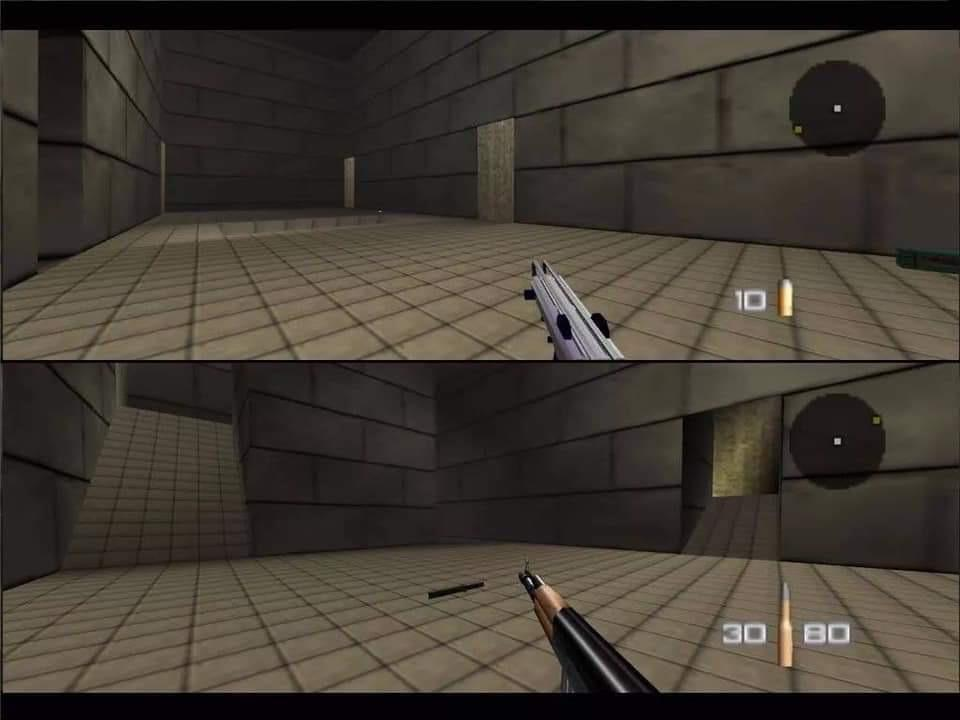

Since a very young age video games have been a huge part of my life. Since two of my brothers are 10 years older than me, some of my earliest memories are waking up
early in the morning and going to the room my parents named "The Nintendo Room" and watching my brothers face off on the map called Temple on GoldenEye 64.

As soon as I was old enough my brothers would eventually start giving me my own turn I was hooked. I remember the first time
somebody at school told me about a game where we could play together, called "RuneScape" and I think that was when I really started investing a substantial amount of time into a computer screen.
Favorite Games
My favorite games of all time though are as follows